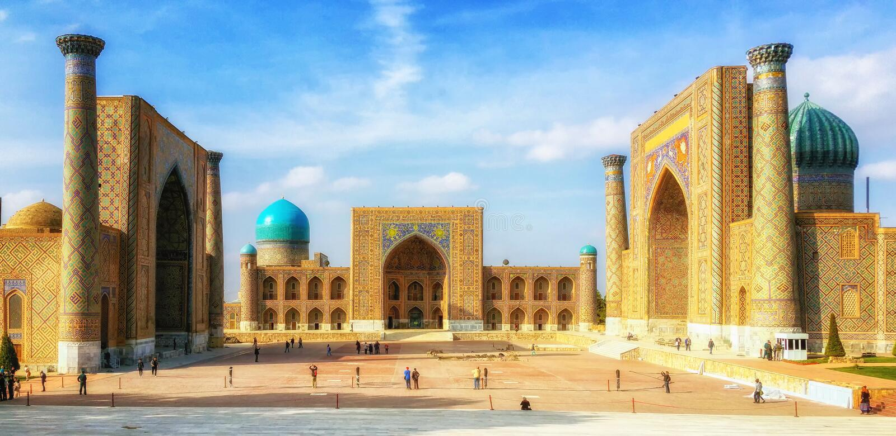

Что привезти из Самарканда?
Самарканд - один из красивейших городов Узбекистана, который славен своей историей, культурой и богатством национального ремесла. Многие туристы приезжают в этот город не только для того, чтобы увидеть его исторические достопримечательности, но и, конечно же, для того, чтобы купить местные сувениры и подарки. В этой статье мы расскажем о том, что стоит привезти из Самарканда и что можно купить в подарок близким и друзьям.
1. Изделия из шелка - Самарканд славится производством шелковых тканей. На местных базарах очень много магазинов, которые продают одежду, платки, колготки, и другие изделия из шелка. Все они выполнены в гармоничных комбинациях ярких и сдержанных цветов и обещают стать жемчужинами вашей гардеробы.
2. Столовые приборы - на местных рынках Самарканда можно купить красивые столовые приборы, которые выполняются мастерами вручную. Ваш стол станет намного более изысканным и изящным с ними.
3. Украшения - Ювелирные мастерские Самарканда привлекают туристов со всего мира своими красивыми украшениями, которые выполнены вроде традиционных, так и в современном стиле. Браслеты, серьги, колечки и ожерелья в узбекском национальном стиле станут отличным подарком для друзей и близких.
4. Ковры - еще один популярный подарок из Самарканда - это аутентичные ковры, которые выполняются батьками вручную. Они славятся высочайшим качеством и яркой цветовой гаммой. Эти ковры украсят дом и станут отличным подарком на юбилеи.
5. Сувениры - вы можете купить все, что угодно, от магнитиков и календарей, до керамических ваз и настольных игр, чтобы напомнить вам о Самарканде в любое время.
В заключение можно сказать, что в Самарканде есть на что посмотреть и что купить. Это место фантастическое для тех, кто любит коллекционировать и коллекционировать вещи. Не забудьте заглянуть на местный базар, где цены становятся настолько низкими, что разум сомневается в их справедливости. Вообще, покупая сувениры в Самарканде, выбирайте качественные товары, которые будут вызывать у вас приятные воспоминания в любое время года и в любой момент вашей жизни.